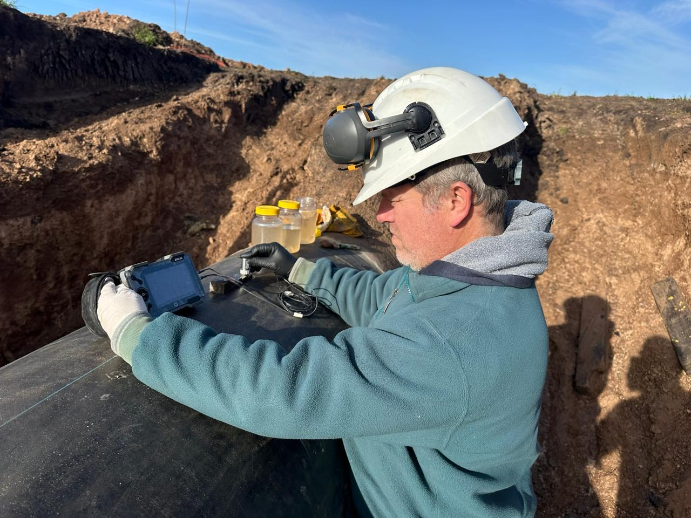
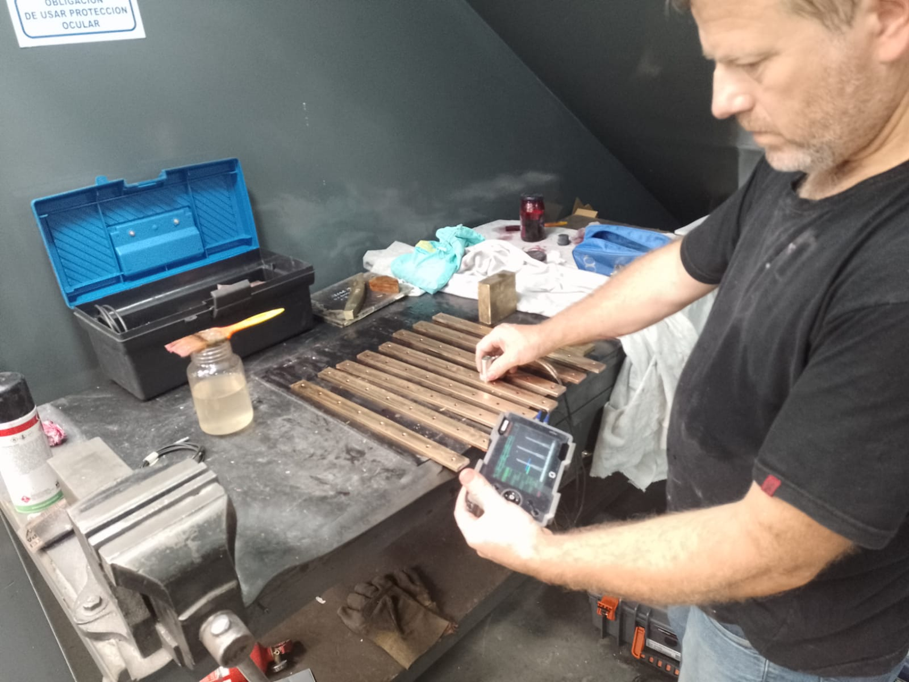
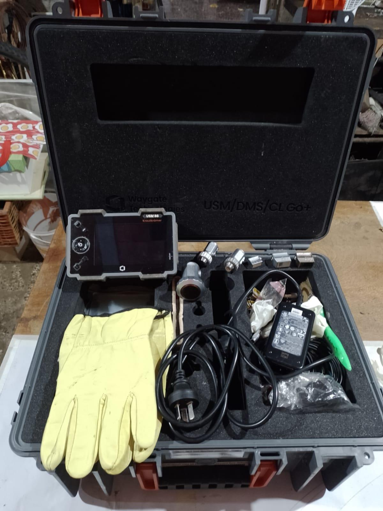

Soldaduras
Evaluación del volumen de la unión y zonas asociadas cuando la geometría y técnica lo permiten.
Ensayo volumétrico
Método de Ensayo No Destructivo utilizado para evaluar internamente soldaduras, materiales y componentes mediante ondas ultrasónicas.
Equipo propio de profesionales calificados, con equipo GE USM Go propio y base operativa en Lanús.
Podés enviar fotos, material, dimensiones, espesor, cantidad, ubicación y norma o especificación aplicable.

El método
La inspección por Ultrasonido utiliza ondas acústicas de alta frecuencia introducidas en el material mediante un transductor.
Las reflexiones recibidas permiten al técnico interpretar cambios relacionados con interfaces, geometrías y posibles discontinuidades dentro del alcance de la técnica aplicada.
La interpretación depende de la técnica, calibración, geometría, material y criterio aplicable. Una indicación no implica automáticamente rechazo.

Objetivo de la inspección
Evaluación del volumen de la unión y zonas asociadas cuando la geometría y técnica lo permiten.
Evaluación localizada de chapas, tubos y componentes para identificar reflectores relevantes.
Evaluación de áreas próximas a soldaduras cuando forman parte del alcance establecido.
Aplicaciones específicas según material, geometría y procedimiento.
Aplicaciones habituales
Condiciones de aplicación
La técnica se selecciona según geometría, acceso y objetivo.
La calibración se realiza según el procedimiento; el transductor se selecciona conforme a geometría y objetivo.
La posibilidad de inspección depende de material, geometría, espesor, accesibilidad, estado superficial, técnica, procedimiento y criterio aplicable.
Proceso general
Se revisan componente, zona y requisitos aplicables.
Se verifican las condiciones necesarias.
Se definen los recursos y la calibración.
Se realiza el recorrido definido.
Se evalúan las indicaciones según el criterio aplicable.
Se documentan las zonas y resultados.
Recursos propios
Atom NDT dispone de equipo GE USM Go y accesorios de inspección y calibración seleccionados según la técnica y los requisitos del trabajo.

Resultados
La evaluación se limita al alcance examinado, la técnica aplicada y el criterio acordado. No constituye por sí sola una evaluación integral de aptitud para servicio.
Alcance técnico
Las propiedades condicionan la técnica.
Puede afectar evaluación y acceso.
Debe permitir el acople.
La zona debe ser accesible.
Influye en la respuesta.
Se verifica según procedimiento.
Se define según el alcance.
Respaldo profesional
El equipo de Atom NDT está integrado por profesionales calificados y certificados en Ensayos No Destructivos. La documentación correspondiente al personal asignado puede presentarse según los requisitos del proyecto.
Conocer nuestro respaldo técnicoAntes de consultar
Depende del material, geometría, espesor y acceso.
Puede aportar información dentro del alcance de la técnica; las indicaciones requieren evaluación.
Debe permitir un acople adecuado y acceso.
Sí, se evalúan inspecciones puntuales y de mayor alcance.
Según el alcance acordado, puede incluir informe técnico y evaluación aplicable.
Enviá fotos, material, dimensiones, espesor, ubicación y requisitos.
Evaluación inicial
Enviá fotos, material, dimensiones, espesor, cantidad, ubicación y requisitos del trabajo.